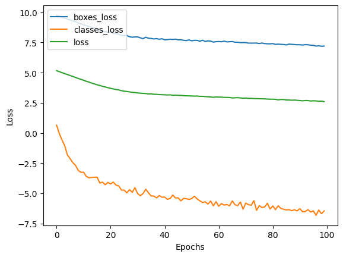
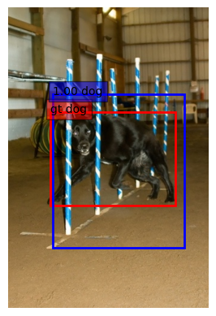
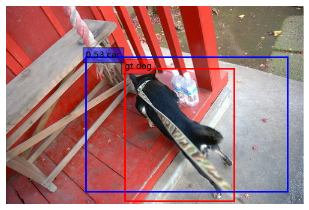
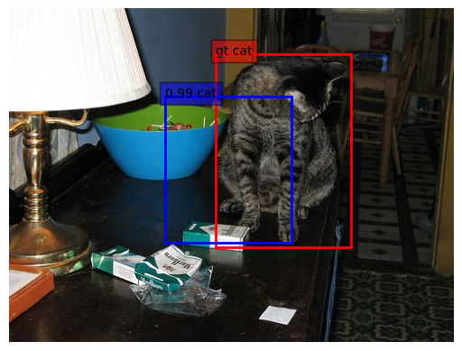

{kind=link}
from __future__ import division
import numpy as np
import xml.etree.ElementTree as etree
import os
import os.path as op
# Parse the xml annotation file and retrieve the path to each image,
# its size and annotations
def extract_xml_annotation(filename):
z = etree.parse(filename)
objects = z.findall("./object")
size = (int(z.find(".//width").text), int(z.find(".//height").text))
fname = z.find("./filename").text
dicts = [{obj.find("name").text:[int(obj.find("bndbox/xmin").text),
int(obj.find("bndbox/ymin").text),
int(obj.find("bndbox/xmax").text),
int(obj.find("bndbox/ymax").text)]}
for obj in objects]
return {"size": size, "filename": fname, "objects": dicts}Clasificación y localización
Descargas
# Filters annotations keeping only those we are interested in
# We only keep images in which there is a single item
annotations = []
filters = ["dog", "cat", "bus", "car", "aeroplane"]
idx2labels = {k: v for k, v in enumerate(filters)}
labels2idx = {v: k for k, v in idx2labels.items()}
annotation_folder = op.join("VOCdevkit", "VOC2007", "Annotations")
for filename in sorted(os.listdir(annotation_folder)):
annotation = extract_xml_annotation(op.join(annotation_folder, filename))
new_objects = []
for obj in annotation["objects"]:
# keep only labels we're interested in
if list(obj.keys())[0] in filters:
new_objects.append(obj)
# Keep only if there's a single object in the image
if len(new_objects) == 1:
annotation["class"] = list(new_objects[0].keys())[0]
annotation["bbox"] = list(new_objects[0].values())[0]
annotation.pop("objects")
annotations.append(annotation)print("Number of images with annotations:", len(annotations))
print("Contents of annotation[0]:\n", annotations[0])
print("Correspondence between indices and labels:\n", idx2labels)Number of images with annotations: 1264
Contents of annotation[0]:
{'size': (500, 333), 'filename': '000007.jpg', 'class': 'car', 'bbox': [141, 50, 500, 330]}
Correspondence between indices and labels:
{0: 'dog', 1: 'cat', 2: 'bus', 3: 'car', 4: 'aeroplane'}Embeddings
# %load solutions/load_pretrained.py
from keras.applications.resnet50 import ResNet50
from keras.models import Model
model = ResNet50(include_top=False)
input = model.input
# Remove the average pooling layer
output = model.layers[-2].output
headless_conv = Model(inputs=input, outputs=output)from PIL import Image
from imageio.v2 import imread
from keras.applications.imagenet_utils import preprocess_input
def predict_batch(model, img_batch_path, img_size=None):
img_list = []
for im_path in img_batch_path:
img = imread(im_path)
if img_size:
img_pil = Image.fromarray(img)
img_resized = img_pil.resize(img_size)
img = np.array(img_resized).astype("float32")
img = img.astype('float32')
img_list.append(img)
try:
img_batch = np.stack(img_list, axis=0)
except:
raise ValueError(
'when both img_size and crop_size are None, all images '
'in image_paths must have the same shapes.')
return model.predict(preprocess_input(img_batch))output = predict_batch(headless_conv, ["dog.jpg"], (1000, 224))
print("output shape", output.shape)1/1 ━━━━━━━━━━━━━━━━━━━━ 1s 934ms/step output shape (1, 7, 32, 2048)
The output size is (batch_size, 1000/32 = 32, 224/32 = 7, 2048)
Calcular las representaciones en todas las imágenes
import h5py
# Load pre-calculated representations
h5f = h5py.File(op.join("VOCdevkit", "voc_representations.h5"),'r')
reprs = h5f['reprs'][:]
h5f.close()Ground truth
img_resize = 224
num_classes = len(labels2idx.keys())
def tensorize_ground_truth(annotations):
all_boxes = []
all_cls = []
for idx, annotation in enumerate(annotations):
# Build a one-hot encoding of the class
cls = np.zeros((num_classes))
cls_idx = labels2idx[annotation["class"]]
cls[cls_idx] = 1.0
coords = annotation["bbox"]
size = annotation["size"]
# resize the image
x1, y1, x2, y2 = (coords[0] * img_resize / size[0],
coords[1] * img_resize / size[1],
coords[2] * img_resize / size[0],
coords[3] * img_resize / size[1])
# compute center of the box and its height and width
cx, cy = ((x2 + x1) / 2, (y2 + y1) / 2)
w = x2 - x1
h = y2 - y1
boxes = np.array([cx, cy, w, h])
all_boxes.append(boxes)
all_cls.append(cls)
# stack everything into two big np tensors
return np.vstack(all_cls), np.vstack(all_boxes)classes, boxes = tensorize_ground_truth(annotations)print("Classes and boxes shapes:", classes.shape, boxes.shape)Classes and boxes shapes: (1264, 5) (1264, 4)print("First 2 classes labels:\n")
print(classes[0:2])First 2 classes labels:
[[0. 0. 0. 1. 0.]
[0. 0. 0. 1. 0.]]print("First 2 boxes coordinates:\n")
print(boxes[0:2])First 2 boxes coordinates:
[[143.584 127.80780781 160.832 188.34834835]
[113.568 123.43543544 87.36 116.37237237]]def interpret_output(cls, boxes, img_size=(500, 333)):
cls_idx = np.argmax(cls)
confidence = cls[cls_idx]
classname = idx2labels[cls_idx]
cx, cy = boxes[0], boxes[1]
w, h = boxes[2], boxes[3]
small_box = [max(0, cx - w / 2), max(0, cy - h / 2),
min(img_resize, cx + w / 2), min(img_resize, cy + h / 2)]
fullsize_box = [int(small_box[0] * img_size[0] / img_resize),
int(small_box[1] * img_size[1] / img_resize),
int(small_box[2] * img_size[0] / img_resize),
int(small_box[3] * img_size[1] / img_resize)]
output = {"class": classname, "confidence":confidence, "bbox": fullsize_box}
return outputimg_idx = 1
print("Original annotation:\n")
print(annotations[img_idx])Original annotation:
{'size': (500, 333), 'filename': '000012.jpg', 'class': 'car', 'bbox': [156, 97, 351, 270]}print("Interpreted output:\n")
print(interpret_output(classes[img_idx], boxes[img_idx],
img_size=annotations[img_idx]["size"]))Interpreted output:
{'class': 'car', 'confidence': 1.0, 'bbox': [156, 97, 351, 270]}Intersection over Union
def iou(boxA, boxB):
# find the intersecting box coordinates
x0 = max(boxA[0], boxB[0])
y0 = max(boxA[1], boxB[1])
x1 = min(boxA[2], boxB[2])
y1 = min(boxA[3], boxB[3])
# compute the area of intersection rectangle
inter_area = max(x1 - x0, 0) * max(y1 - y0, 0) + 1
# compute the area of each box
boxA_area = (boxA[2] - boxA[0] + 1) * (boxA[3] - boxA[1] + 1)
boxB_area = (boxB[2] - boxB[0] + 1) * (boxB[3] - boxB[1] + 1)
# compute the intersection over union by taking the intersection
# area and dividing it by the sum of areas - the interesection area
return inter_area / float(boxA_area + boxB_area - inter_area)iou([47, 35, 147, 101], [1, 124, 496, 235])1.604672807214609e-05img_idx = 1
original = annotations[img_idx]
interpreted = interpret_output(classes[img_idx], boxes[img_idx],
img_size=annotations[img_idx]["size"])
print("iou:", iou(original["bbox"], interpreted["bbox"]))iou: 0.9786493385936412Modelo de clasificación y localización
from keras.losses import mean_squared_error, categorical_crossentropy
from keras.layers import Input, Convolution2D, Dropout, GlobalAveragePooling2D
from keras.layers import Flatten, Dense, GlobalMaxPooling2D
from keras.models import Model
def classif_and_loc_avg_model(num_classes):
"""model that averages all the spatial information
The goal of this model it to show that it's a very bad idea to
destroy the spatial information with GlobalAveragePooling2D layer
if our goal is to do object localization.
"""
model_input = Input(shape=(7, 7, 2048))
x = GlobalAveragePooling2D()(model_input)
x = Dropout(0.2)(x)
head_classes = Dense(num_classes, activation="softmax", name="head_classes")(x)
head_boxes = Dense(4, name="head_boxes")(x)
model = Model(inputs=model_input, outputs=[head_classes, head_boxes],
name="resnet_loc")
model.compile(optimizer="adam", loss=[categorical_crossentropy, "mse"],
loss_weights=[1., 0.01])
return modelmodel = classif_and_loc_avg_model(num_classes)num = 64
inputs = reprs[0:num]
out_cls, out_boxes = classes[0:num], boxes[0:num]
print("input batch shape:", inputs.shape)
print("ground truth batch shapes:", out_cls.shape, out_boxes.shape)input batch shape: (64, 7, 7, 2048)
ground truth batch shapes: (64, 5) (64, 4)out_cls.mean(axis=0)array([0.265625, 0.1875 , 0.03125 , 0.453125, 0.0625 ])out = model.predict(inputs)
print("model output shapes:", out[0].shape, out[1].shape)2/2 ━━━━━━━━━━━━━━━━━━━━ 0s 11ms/step model output shapes: (64, 5) (64, 4)
history = model.fit(inputs, [out_cls, out_boxes],
batch_size=10, epochs=100)Epoch 1/100 7/7 ━━━━━━━━━━━━━━━━━━━━ 0s 4ms/step - head_boxes_loss: 17972.5195 - head_classes_loss: 2.1833 - loss: 182.5903 Epoch 2/100 7/7 ━━━━━━━━━━━━━━━━━━━━ 0s 3ms/step - head_boxes_loss: 15940.1348 - head_classes_loss: 1.3818 - loss: 161.1863 Epoch 3/100 7/7 ━━━━━━━━━━━━━━━━━━━━ 0s 3ms/step - head_boxes_loss: 14151.4932 - head_classes_loss: 0.5389 - loss: 142.8707 Epoch 4/100 7/7 ━━━━━━━━━━━━━━━━━━━━ 0s 3ms/step - head_boxes_loss: 13744.4951 - head_classes_loss: 0.3754 - loss: 137.9574 Epoch 5/100 7/7 ━━━━━━━━━━━━━━━━━━━━ 0s 5ms/step - head_boxes_loss: 13268.7100 - head_classes_loss: 0.2007 - loss: 133.1759 Epoch 6/100 7/7 ━━━━━━━━━━━━━━━━━━━━ 0s 3ms/step - head_boxes_loss: 12060.4863 - head_classes_loss: 0.0992 - loss: 120.4861 Epoch 7/100 7/7 ━━━━━━━━━━━━━━━━━━━━ 0s 3ms/step - head_boxes_loss: 11131.0781 - head_classes_loss: 0.0663 - loss: 111.1454 Epoch 8/100 7/7 ━━━━━━━━━━━━━━━━━━━━ 0s 3ms/step - head_boxes_loss: 10234.7588 - head_classes_loss: 0.0559 - loss: 102.0231 Epoch 9/100 7/7 ━━━━━━━━━━━━━━━━━━━━ 0s 3ms/step - head_boxes_loss: 9230.1514 - head_classes_loss: 0.0458 - loss: 92.6901 Epoch 10/100 7/7 ━━━━━━━━━━━━━━━━━━━━ 0s 3ms/step - head_boxes_loss: 8009.4800 - head_classes_loss: 0.0317 - loss: 80.1446 Epoch 11/100 7/7 ━━━━━━━━━━━━━━━━━━━━ 0s 3ms/step - head_boxes_loss: 8036.9961 - head_classes_loss: 0.0411 - loss: 80.3372 Epoch 12/100 7/7 ━━━━━━━━━━━━━━━━━━━━ 0s 3ms/step - head_boxes_loss: 7061.5000 - head_classes_loss: 0.0239 - loss: 70.8101 Epoch 13/100 7/7 ━━━━━━━━━━━━━━━━━━━━ 0s 3ms/step - head_boxes_loss: 6943.0713 - head_classes_loss: 0.0229 - loss: 69.3297 Epoch 14/100 7/7 ━━━━━━━━━━━━━━━━━━━━ 0s 3ms/step - head_boxes_loss: 6638.4497 - head_classes_loss: 0.0237 - loss: 66.1968 Epoch 15/100 7/7 ━━━━━━━━━━━━━━━━━━━━ 0s 3ms/step - head_boxes_loss: 5773.5840 - head_classes_loss: 0.0242 - loss: 57.0677 Epoch 16/100 7/7 ━━━━━━━━━━━━━━━━━━━━ 0s 3ms/step - head_boxes_loss: 5067.9219 - head_classes_loss: 0.0258 - loss: 50.6844 Epoch 17/100 7/7 ━━━━━━━━━━━━━━━━━━━━ 0s 3ms/step - head_boxes_loss: 4919.1699 - head_classes_loss: 0.0153 - loss: 49.0794 Epoch 18/100 7/7 ━━━━━━━━━━━━━━━━━━━━ 0s 3ms/step - head_boxes_loss: 4850.7412 - head_classes_loss: 0.0180 - loss: 48.7978 Epoch 19/100 7/7 ━━━━━━━━━━━━━━━━━━━━ 0s 3ms/step - head_boxes_loss: 4630.3965 - head_classes_loss: 0.0127 - loss: 46.5497 Epoch 20/100 7/7 ━━━━━━━━━━━━━━━━━━━━ 0s 4ms/step - head_boxes_loss: 4313.4844 - head_classes_loss: 0.0159 - loss: 43.2661 Epoch 21/100 7/7 ━━━━━━━━━━━━━━━━━━━━ 0s 3ms/step - head_boxes_loss: 3805.2886 - head_classes_loss: 0.0154 - loss: 37.6120 Epoch 22/100 7/7 ━━━━━━━━━━━━━━━━━━━━ 0s 3ms/step - head_boxes_loss: 3984.5269 - head_classes_loss: 0.0139 - loss: 39.8876 Epoch 23/100 7/7 ━━━━━━━━━━━━━━━━━━━━ 0s 3ms/step - head_boxes_loss: 3827.4724 - head_classes_loss: 0.0130 - loss: 37.9763 Epoch 24/100 7/7 ━━━━━━━━━━━━━━━━━━━━ 0s 10ms/step - head_boxes_loss: 3859.0188 - head_classes_loss: 0.0118 - loss: 38.5174 Epoch 25/100 7/7 ━━━━━━━━━━━━━━━━━━━━ 0s 3ms/step - head_boxes_loss: 3778.6074 - head_classes_loss: 0.0080 - loss: 38.0217 Epoch 26/100 7/7 ━━━━━━━━━━━━━━━━━━━━ 0s 3ms/step - head_boxes_loss: 2922.7329 - head_classes_loss: 0.0096 - loss: 29.1933 Epoch 27/100 7/7 ━━━━━━━━━━━━━━━━━━━━ 0s 3ms/step - head_boxes_loss: 3021.8337 - head_classes_loss: 0.0064 - loss: 29.9597 Epoch 28/100 7/7 ━━━━━━━━━━━━━━━━━━━━ 0s 3ms/step - head_boxes_loss: 3382.9001 - head_classes_loss: 0.0087 - loss: 34.1091 Epoch 29/100 7/7 ━━━━━━━━━━━━━━━━━━━━ 0s 3ms/step - head_boxes_loss: 2941.6494 - head_classes_loss: 0.0084 - loss: 29.6819 Epoch 30/100 7/7 ━━━━━━━━━━━━━━━━━━━━ 0s 3ms/step - head_boxes_loss: 2856.4614 - head_classes_loss: 0.0095 - loss: 28.5830 Epoch 31/100 7/7 ━━━━━━━━━━━━━━━━━━━━ 0s 3ms/step - head_boxes_loss: 2759.3818 - head_classes_loss: 0.0066 - loss: 27.3447 Epoch 32/100 7/7 ━━━━━━━━━━━━━━━━━━━━ 0s 3ms/step - head_boxes_loss: 2930.5884 - head_classes_loss: 0.0050 - loss: 29.4397 Epoch 33/100 7/7 ━━━━━━━━━━━━━━━━━━━━ 0s 3ms/step - head_boxes_loss: 2698.9763 - head_classes_loss: 0.0068 - loss: 27.4157 Epoch 34/100 7/7 ━━━━━━━━━━━━━━━━━━━━ 0s 3ms/step - head_boxes_loss: 2685.6758 - head_classes_loss: 0.0087 - loss: 26.4414 Epoch 35/100 7/7 ━━━━━━━━━━━━━━━━━━━━ 0s 3ms/step - head_boxes_loss: 2446.5513 - head_classes_loss: 0.0056 - loss: 24.3928 Epoch 36/100 7/7 ━━━━━━━━━━━━━━━━━━━━ 0s 3ms/step - head_boxes_loss: 2645.4763 - head_classes_loss: 0.0054 - loss: 26.5532 Epoch 37/100 7/7 ━━━━━━━━━━━━━━━━━━━━ 0s 3ms/step - head_boxes_loss: 2422.2097 - head_classes_loss: 0.0058 - loss: 24.3874 Epoch 38/100 7/7 ━━━━━━━━━━━━━━━━━━━━ 0s 3ms/step - head_boxes_loss: 2431.1492 - head_classes_loss: 0.0044 - loss: 24.2241 Epoch 39/100 7/7 ━━━━━━━━━━━━━━━━━━━━ 0s 3ms/step - head_boxes_loss: 2248.5698 - head_classes_loss: 0.0055 - loss: 22.6144 Epoch 40/100 7/7 ━━━━━━━━━━━━━━━━━━━━ 0s 3ms/step - head_boxes_loss: 2283.1755 - head_classes_loss: 0.0046 - loss: 22.6371 Epoch 41/100 7/7 ━━━━━━━━━━━━━━━━━━━━ 0s 3ms/step - head_boxes_loss: 2298.8870 - head_classes_loss: 0.0049 - loss: 23.2539 Epoch 42/100 7/7 ━━━━━━━━━━━━━━━━━━━━ 0s 3ms/step - head_boxes_loss: 2435.0852 - head_classes_loss: 0.0042 - loss: 24.4689 Epoch 43/100 7/7 ━━━━━━━━━━━━━━━━━━━━ 0s 3ms/step - head_boxes_loss: 2441.0625 - head_classes_loss: 0.0044 - loss: 24.3910 Epoch 44/100 7/7 ━━━━━━━━━━━━━━━━━━━━ 0s 3ms/step - head_boxes_loss: 2311.7266 - head_classes_loss: 0.0053 - loss: 22.9973 Epoch 45/100 7/7 ━━━━━━━━━━━━━━━━━━━━ 0s 3ms/step - head_boxes_loss: 2372.1787 - head_classes_loss: 0.0048 - loss: 23.5092 Epoch 46/100 7/7 ━━━━━━━━━━━━━━━━━━━━ 0s 3ms/step - head_boxes_loss: 2228.9111 - head_classes_loss: 0.0045 - loss: 22.3401 Epoch 47/100 7/7 ━━━━━━━━━━━━━━━━━━━━ 0s 3ms/step - head_boxes_loss: 2020.0719 - head_classes_loss: 0.0038 - loss: 20.1627 Epoch 48/100 7/7 ━━━━━━━━━━━━━━━━━━━━ 0s 3ms/step - head_boxes_loss: 2291.6567 - head_classes_loss: 0.0042 - loss: 23.0159 Epoch 49/100 7/7 ━━━━━━━━━━━━━━━━━━━━ 0s 3ms/step - head_boxes_loss: 2125.6689 - head_classes_loss: 0.0051 - loss: 21.4342 Epoch 50/100 7/7 ━━━━━━━━━━━━━━━━━━━━ 0s 3ms/step - head_boxes_loss: 1988.7704 - head_classes_loss: 0.0045 - loss: 19.6816 Epoch 51/100 7/7 ━━━━━━━━━━━━━━━━━━━━ 0s 3ms/step - head_boxes_loss: 2048.7256 - head_classes_loss: 0.0043 - loss: 20.6911 Epoch 52/100 7/7 ━━━━━━━━━━━━━━━━━━━━ 0s 3ms/step - head_boxes_loss: 2033.0394 - head_classes_loss: 0.0061 - loss: 20.2451 Epoch 53/100 7/7 ━━━━━━━━━━━━━━━━━━━━ 0s 3ms/step - head_boxes_loss: 2001.8275 - head_classes_loss: 0.0032 - loss: 19.9809 Epoch 54/100 7/7 ━━━━━━━━━━━━━━━━━━━━ 0s 3ms/step - head_boxes_loss: 2207.7148 - head_classes_loss: 0.0035 - loss: 22.2814 Epoch 55/100 7/7 ━━━━━━━━━━━━━━━━━━━━ 0s 3ms/step - head_boxes_loss: 1918.1088 - head_classes_loss: 0.0025 - loss: 18.9470 Epoch 56/100 7/7 ━━━━━━━━━━━━━━━━━━━━ 0s 3ms/step - head_boxes_loss: 2190.1042 - head_classes_loss: 0.0034 - loss: 22.0774 Epoch 57/100 7/7 ━━━━━━━━━━━━━━━━━━━━ 0s 3ms/step - head_boxes_loss: 1955.4595 - head_classes_loss: 0.0024 - loss: 19.4009 Epoch 58/100 7/7 ━━━━━━━━━━━━━━━━━━━━ 0s 3ms/step - head_boxes_loss: 1981.0059 - head_classes_loss: 0.0041 - loss: 19.7037 Epoch 59/100 7/7 ━━━━━━━━━━━━━━━━━━━━ 0s 3ms/step - head_boxes_loss: 1986.1055 - head_classes_loss: 0.0023 - loss: 20.0243 Epoch 60/100 7/7 ━━━━━━━━━━━━━━━━━━━━ 0s 3ms/step - head_boxes_loss: 1817.0448 - head_classes_loss: 0.0034 - loss: 18.2813 Epoch 61/100 7/7 ━━━━━━━━━━━━━━━━━━━━ 0s 3ms/step - head_boxes_loss: 1675.4432 - head_classes_loss: 0.0024 - loss: 16.7537 Epoch 62/100 7/7 ━━━━━━━━━━━━━━━━━━━━ 0s 3ms/step - head_boxes_loss: 1883.2296 - head_classes_loss: 0.0028 - loss: 18.9159 Epoch 63/100 7/7 ━━━━━━━━━━━━━━━━━━━━ 0s 3ms/step - head_boxes_loss: 1998.4353 - head_classes_loss: 0.0027 - loss: 19.7077 Epoch 64/100 7/7 ━━━━━━━━━━━━━━━━━━━━ 0s 3ms/step - head_boxes_loss: 1791.3716 - head_classes_loss: 0.0023 - loss: 17.9422 Epoch 65/100 7/7 ━━━━━━━━━━━━━━━━━━━━ 0s 4ms/step - head_boxes_loss: 1808.9841 - head_classes_loss: 0.0023 - loss: 18.0037 Epoch 66/100 7/7 ━━━━━━━━━━━━━━━━━━━━ 0s 4ms/step - head_boxes_loss: 1825.4220 - head_classes_loss: 0.0048 - loss: 17.9281 Epoch 67/100 7/7 ━━━━━━━━━━━━━━━━━━━━ 0s 4ms/step - head_boxes_loss: 1742.1736 - head_classes_loss: 0.0026 - loss: 17.4203 Epoch 68/100 7/7 ━━━━━━━━━━━━━━━━━━━━ 0s 3ms/step - head_boxes_loss: 2069.6509 - head_classes_loss: 0.0023 - loss: 20.7654 Epoch 69/100 7/7 ━━━━━━━━━━━━━━━━━━━━ 0s 4ms/step - head_boxes_loss: 1805.4827 - head_classes_loss: 0.0029 - loss: 18.1471 Epoch 70/100 7/7 ━━━━━━━━━━━━━━━━━━━━ 0s 4ms/step - head_boxes_loss: 1798.4182 - head_classes_loss: 0.0022 - loss: 17.9621 Epoch 71/100 7/7 ━━━━━━━━━━━━━━━━━━━━ 0s 7ms/step - head_boxes_loss: 1766.0226 - head_classes_loss: 0.0024 - loss: 17.7009 Epoch 72/100 7/7 ━━━━━━━━━━━━━━━━━━━━ 0s 3ms/step - head_boxes_loss: 1883.0762 - head_classes_loss: 0.0026 - loss: 18.9359 Epoch 73/100 7/7 ━━━━━━━━━━━━━━━━━━━━ 0s 3ms/step - head_boxes_loss: 1692.3936 - head_classes_loss: 0.0025 - loss: 17.0519 Epoch 74/100 7/7 ━━━━━━━━━━━━━━━━━━━━ 0s 3ms/step - head_boxes_loss: 1779.0175 - head_classes_loss: 0.0040 - loss: 17.8345 Epoch 75/100 7/7 ━━━━━━━━━━━━━━━━━━━━ 0s 3ms/step - head_boxes_loss: 1678.3625 - head_classes_loss: 0.0019 - loss: 16.7768 Epoch 76/100 7/7 ━━━━━━━━━━━━━━━━━━━━ 0s 4ms/step - head_boxes_loss: 1808.9407 - head_classes_loss: 0.0030 - loss: 18.2231 Epoch 77/100 7/7 ━━━━━━━━━━━━━━━━━━━━ 0s 4ms/step - head_boxes_loss: 1615.5199 - head_classes_loss: 0.0026 - loss: 16.0924 Epoch 78/100 7/7 ━━━━━━━━━━━━━━━━━━━━ 0s 4ms/step - head_boxes_loss: 1499.8060 - head_classes_loss: 0.0024 - loss: 15.0986 Epoch 79/100 7/7 ━━━━━━━━━━━━━━━━━━━━ 0s 4ms/step - head_boxes_loss: 1561.9724 - head_classes_loss: 0.0021 - loss: 15.7328 Epoch 80/100 7/7 ━━━━━━━━━━━━━━━━━━━━ 0s 4ms/step - head_boxes_loss: 1619.8292 - head_classes_loss: 0.0020 - loss: 16.2815 Epoch 81/100 7/7 ━━━━━━━━━━━━━━━━━━━━ 0s 5ms/step - head_boxes_loss: 1753.1555 - head_classes_loss: 0.0021 - loss: 17.5438 Epoch 82/100 7/7 ━━━━━━━━━━━━━━━━━━━━ 0s 3ms/step - head_boxes_loss: 1509.0085 - head_classes_loss: 0.0019 - loss: 15.2850 Epoch 83/100 7/7 ━━━━━━━━━━━━━━━━━━━━ 0s 4ms/step - head_boxes_loss: 1738.1558 - head_classes_loss: 0.0022 - loss: 17.3382 Epoch 84/100 7/7 ━━━━━━━━━━━━━━━━━━━━ 0s 3ms/step - head_boxes_loss: 1580.9921 - head_classes_loss: 0.0022 - loss: 15.9418 Epoch 85/100 7/7 ━━━━━━━━━━━━━━━━━━━━ 0s 3ms/step - head_boxes_loss: 1659.5834 - head_classes_loss: 0.0017 - loss: 16.7462 Epoch 86/100 7/7 ━━━━━━━━━━━━━━━━━━━━ 0s 3ms/step - head_boxes_loss: 1620.8119 - head_classes_loss: 0.0018 - loss: 16.3729 Epoch 87/100 7/7 ━━━━━━━━━━━━━━━━━━━━ 0s 4ms/step - head_boxes_loss: 1570.1206 - head_classes_loss: 0.0015 - loss: 15.5894 Epoch 88/100 7/7 ━━━━━━━━━━━━━━━━━━━━ 0s 3ms/step - head_boxes_loss: 1589.4634 - head_classes_loss: 0.0021 - loss: 15.8076 Epoch 89/100 7/7 ━━━━━━━━━━━━━━━━━━━━ 0s 4ms/step - head_boxes_loss: 1429.0085 - head_classes_loss: 0.0016 - loss: 14.3042 Epoch 90/100 7/7 ━━━━━━━━━━━━━━━━━━━━ 0s 5ms/step - head_boxes_loss: 1571.0714 - head_classes_loss: 0.0017 - loss: 15.7220 Epoch 91/100 7/7 ━━━━━━━━━━━━━━━━━━━━ 0s 4ms/step - head_boxes_loss: 1388.4607 - head_classes_loss: 0.0020 - loss: 13.8351 Epoch 92/100 7/7 ━━━━━━━━━━━━━━━━━━━━ 0s 4ms/step - head_boxes_loss: 1449.2737 - head_classes_loss: 0.0013 - loss: 14.4236 Epoch 93/100 7/7 ━━━━━━━━━━━━━━━━━━━━ 0s 3ms/step - head_boxes_loss: 1397.3894 - head_classes_loss: 0.0016 - loss: 13.8752 Epoch 94/100 7/7 ━━━━━━━━━━━━━━━━━━━━ 0s 3ms/step - head_boxes_loss: 1495.3950 - head_classes_loss: 0.0017 - loss: 14.9094 Epoch 95/100 7/7 ━━━━━━━━━━━━━━━━━━━━ 0s 3ms/step - head_boxes_loss: 1388.0986 - head_classes_loss: 0.0017 - loss: 13.8051 Epoch 96/100 7/7 ━━━━━━━━━━━━━━━━━━━━ 0s 3ms/step - head_boxes_loss: 1432.1313 - head_classes_loss: 0.0015 - loss: 14.3608 Epoch 97/100 7/7 ━━━━━━━━━━━━━━━━━━━━ 0s 3ms/step - head_boxes_loss: 1447.3666 - head_classes_loss: 0.0011 - loss: 14.6846 Epoch 98/100 7/7 ━━━━━━━━━━━━━━━━━━━━ 0s 3ms/step - head_boxes_loss: 1397.3793 - head_classes_loss: 0.0019 - loss: 14.0035 Epoch 99/100 7/7 ━━━━━━━━━━━━━━━━━━━━ 0s 4ms/step - head_boxes_loss: 1473.4706 - head_classes_loss: 0.0014 - loss: 14.9420 Epoch 100/100 7/7 ━━━━━━━━━━━━━━━━━━━━ 0s 6ms/step - head_boxes_loss: 1479.7235 - head_classes_loss: 0.0016 - loss: 14.7976
import matplotlib.pyplot as plt
plt.plot(np.log(history.history["head_boxes_loss"]), label="boxes_loss")
plt.plot(np.log(history.history["head_classes_loss"]), label="classes_loss")
plt.plot(np.log(history.history["loss"]), label="loss")
plt.legend(loc="upper left")
plt.xlabel("Epochs")
plt.ylabel("Loss")
plt.show()
Imágenes y bounding boxes
%matplotlib inline
import matplotlib.pyplot as plt
def patch(axis, bbox, display_txt, color):
coords = (bbox[0], bbox[1]), bbox[2]-bbox[0]+1, bbox[3]-bbox[1]+1
axis.add_patch(plt.Rectangle(*coords, fill=False, edgecolor=color, linewidth=2))
axis.text(bbox[0], bbox[1], display_txt, bbox={'facecolor':color, 'alpha':0.5})
def plot_annotations(img_path, annotation=None, ground_truth=None):
img = imread(img_path)
plt.imshow(img)
current_axis = plt.gca()
if ground_truth:
text = "gt " + ground_truth["class"]
patch(current_axis, ground_truth["bbox"], text, "red")
if annotation:
conf = '{:0.2f} '.format(annotation['confidence'])
text = conf + annotation["class"]
patch(current_axis, annotation["bbox"], text, "blue")
plt.axis('off')
plt.show()
def display(index, ground_truth=True):
res = model.predict(reprs[index][np.newaxis,])
output = interpret_output(res[0][0], res[1][0], img_size=annotations[index]["size"])
plot_annotations("VOCdevkit/VOC2007/JPEGImages/" + annotations[index]["filename"],
output, annotations[index] if ground_truth else None)display(13)1/1 ━━━━━━━━━━━━━━━━━━━━ 0s 47ms/step

display(194)1/1 ━━━━━━━━━━━━━━━━━━━━ 0s 21ms/step

# Compute class accuracy, iou average and global accuracy
def accuracy_and_iou(preds, trues, threshold=0.5):
sum_valid, sum_accurate, sum_iou = 0, 0, 0
num = len(preds)
for pred, true in zip(preds, trues):
iou_value = iou(pred["bbox"], true["bbox"])
if pred["class"] == true["class"] and iou_value > threshold:
sum_valid = sum_valid + 1
sum_iou = sum_iou + iou_value
if pred["class"] == true["class"]:
sum_accurate = sum_accurate + 1
return sum_accurate / num, sum_iou / num, sum_valid / num# Compute the previous function on the whole train / test set
def compute_acc(train=True):
if train:
beg, end = 0, (9 * len(annotations) // 10)
split_name = "train"
else:
beg, end = (9 * len(annotations)) // 10, len(annotations)
split_name = "test"
res = model.predict(reprs[beg:end])
outputs = []
for index, (classes, boxes) in enumerate(zip(res[0], res[1])):
output = interpret_output(classes, boxes,
img_size=annotations[index]["size"])
outputs.append(output)
acc, iou, valid = accuracy_and_iou(outputs, annotations[beg:end],
threshold=0.5)
print('{} acc: {:0.3f}, mean iou: {:0.3f}, acc_valid: {:0.3f}'.format(
split_name, acc, iou, valid) )compute_acc(train=True)
compute_acc(train=False)36/36 ━━━━━━━━━━━━━━━━━━━━ 0s 4ms/step train acc: 0.821, mean iou: 0.367, acc_valid: 0.250 4/4 ━━━━━━━━━━━━━━━━━━━━ 0s 4ms/step test acc: 0.803, mean iou: 0.306, acc_valid: 0.173
Training
# Keep last examples for test
test_num = reprs.shape[0] // 10
train_num = reprs.shape[0] - test_num
test_inputs = reprs[train_num:]
test_cls, test_boxes = classes[train_num:], boxes[train_num:]
print(train_num)1138model = classif_and_loc_avg_model(num_classes)# Keep last examples for test
test_num = reprs.shape[0] // 10
train_num = reprs.shape[0] - test_num
test_inputs = reprs[train_num:]
test_cls, test_boxes = classes[train_num:], boxes[train_num:]
print(train_num)
batch_size = 32
inputs = reprs[0:train_num]
out_cls, out_boxes = classes[0:train_num], boxes[0:train_num]
print(inputs.shape, out_cls.shape, out_boxes.shape)
print(test_inputs.shape, test_cls.shape, test_boxes.shape)
history = model.fit(inputs, y=[out_cls, out_boxes],
validation_data=(test_inputs, [test_cls, test_boxes]),
batch_size=batch_size, epochs=10, verbose=2)1138
(1138, 7, 7, 2048) (1138, 5) (1138, 4)
(126, 7, 7, 2048) (126, 5) (126, 4)
Epoch 1/10
36/36 - 1s - 15ms/step - head_boxes_loss: 14378.6738 - head_classes_loss: 0.7973 - loss: 144.9700 - val_head_boxes_loss: 11651.1797 - val_head_classes_loss: 0.2991 - val_loss: 116.8985
Epoch 2/10
36/36 - 0s - 3ms/step - head_boxes_loss: 9247.6719 - head_classes_loss: 0.2699 - loss: 93.2352 - val_head_boxes_loss: 7589.5547 - val_head_classes_loss: 0.2247 - val_loss: 76.2045
Epoch 3/10
36/36 - 0s - 3ms/step - head_boxes_loss: 6129.0264 - head_classes_loss: 0.1975 - loss: 61.5965 - val_head_boxes_loss: 5228.7178 - val_head_classes_loss: 0.2733 - val_loss: 52.6217
Epoch 4/10
36/36 - 0s - 3ms/step - head_boxes_loss: 4372.4243 - head_classes_loss: 0.1528 - loss: 43.9875 - val_head_boxes_loss: 3972.6484 - val_head_classes_loss: 0.1984 - val_loss: 39.9542
Epoch 5/10
36/36 - 0s - 3ms/step - head_boxes_loss: 3488.2505 - head_classes_loss: 0.1165 - loss: 34.9518 - val_head_boxes_loss: 3369.6165 - val_head_classes_loss: 0.2144 - val_loss: 33.9110
Epoch 6/10
36/36 - 0s - 3ms/step - head_boxes_loss: 3026.0381 - head_classes_loss: 0.0977 - loss: 30.4518 - val_head_boxes_loss: 3077.6650 - val_head_classes_loss: 0.1713 - val_loss: 30.9241
Epoch 7/10
36/36 - 0s - 3ms/step - head_boxes_loss: 2837.5276 - head_classes_loss: 0.0812 - loss: 28.4066 - val_head_boxes_loss: 2931.5464 - val_head_classes_loss: 0.1833 - val_loss: 29.4579
Epoch 8/10
36/36 - 0s - 3ms/step - head_boxes_loss: 2705.0649 - head_classes_loss: 0.0714 - loss: 27.2259 - val_head_boxes_loss: 2843.6616 - val_head_classes_loss: 0.2011 - val_loss: 28.5867
Epoch 9/10
36/36 - 0s - 3ms/step - head_boxes_loss: 2630.8835 - head_classes_loss: 0.0607 - loss: 26.3297 - val_head_boxes_loss: 2775.7207 - val_head_classes_loss: 0.2042 - val_loss: 27.9032
Epoch 10/10
36/36 - 0s - 3ms/step - head_boxes_loss: 2562.8142 - head_classes_loss: 0.0564 - loss: 25.6258 - val_head_boxes_loss: 2714.5698 - val_head_classes_loss: 0.1737 - val_loss: 27.2560compute_acc(train=True)
compute_acc(train=False)36/36 ━━━━━━━━━━━━━━━━━━━━ 0s 2ms/step train acc: 0.998, mean iou: 0.338, acc_valid: 0.198 4/4 ━━━━━━━━━━━━━━━━━━━━ 0s 4ms/step test acc: 0.937, mean iou: 0.290, acc_valid: 0.134
Mejor modelo
# test acc: 0.898, mean iou: 0.457, acc_valid: 0.496
def classif_and_loc(num_classes):
model_input = Input(shape=(7,7,2048))
x = GlobalAveragePooling2D()(model_input)
x = Dropout(0.2)(x)
head_classes = Dense(num_classes, activation="softmax", name="head_classes")(x)
y = Convolution2D(4, 1, 1, activation='relu', name='hidden_conv')(model_input)
y = Flatten()(y)
y = Dropout(0.2)(y)
head_boxes = Dense(4, name="head_boxes")(y)
model = Model(model_input, outputs = [head_classes, head_boxes], name="resnet_loc")
model.compile(optimizer="adam", loss=['categorical_crossentropy', "mse"],
loss_weights=[1., 1/(224*224)])
return model
model = classif_and_loc(5)
history = model.fit(x = inputs, y=[out_cls, out_boxes],
validation_data=(test_inputs, [test_cls, test_boxes]),
batch_size=batch_size, epochs=30, verbose=2)
compute_acc(train=True)
compute_acc(train=False)Epoch 1/30 36/36 - 1s - 19ms/step - head_boxes_loss: 9403.3945 - head_classes_loss: 0.6515 - loss: 0.8438 - val_head_boxes_loss: 3573.7976 - val_head_classes_loss: 0.3122 - val_loss: 0.3848 Epoch 2/30 36/36 - 0s - 5ms/step - head_boxes_loss: 2991.4478 - head_classes_loss: 0.2400 - loss: 0.3018 - val_head_boxes_loss: 2547.3743 - val_head_classes_loss: 0.1948 - val_loss: 0.2470 Epoch 3/30 36/36 - 0s - 5ms/step - head_boxes_loss: 2383.2554 - head_classes_loss: 0.1812 - loss: 0.2287 - val_head_boxes_loss: 2224.8140 - val_head_classes_loss: 0.2158 - val_loss: 0.2618 Epoch 4/30 36/36 - 0s - 5ms/step - head_boxes_loss: 2036.2715 - head_classes_loss: 0.1440 - loss: 0.1845 - val_head_boxes_loss: 1992.4321 - val_head_classes_loss: 0.2149 - val_loss: 0.2566 Epoch 5/30 36/36 - 0s - 5ms/step - head_boxes_loss: 1775.3939 - head_classes_loss: 0.1170 - loss: 0.1534 - val_head_boxes_loss: 1828.7864 - val_head_classes_loss: 0.1908 - val_loss: 0.2290 Epoch 6/30 36/36 - 0s - 5ms/step - head_boxes_loss: 1575.1567 - head_classes_loss: 0.0870 - loss: 0.1190 - val_head_boxes_loss: 1704.3774 - val_head_classes_loss: 0.1965 - val_loss: 0.2323 Epoch 7/30 36/36 - 0s - 5ms/step - head_boxes_loss: 1437.5016 - head_classes_loss: 0.0802 - loss: 0.1084 - val_head_boxes_loss: 1624.1078 - val_head_classes_loss: 0.1735 - val_loss: 0.2075 Epoch 8/30 36/36 - 0s - 5ms/step - head_boxes_loss: 1282.5614 - head_classes_loss: 0.0686 - loss: 0.0945 - val_head_boxes_loss: 1492.1785 - val_head_classes_loss: 0.2291 - val_loss: 0.2612 Epoch 9/30 36/36 - 0s - 5ms/step - head_boxes_loss: 1148.7317 - head_classes_loss: 0.0574 - loss: 0.0805 - val_head_boxes_loss: 1441.3212 - val_head_classes_loss: 0.2023 - val_loss: 0.2330 Epoch 10/30 36/36 - 0s - 5ms/step - head_boxes_loss: 1053.6012 - head_classes_loss: 0.0534 - loss: 0.0740 - val_head_boxes_loss: 1389.9946 - val_head_classes_loss: 0.1791 - val_loss: 0.2086 Epoch 11/30 36/36 - 0s - 5ms/step - head_boxes_loss: 996.6545 - head_classes_loss: 0.0448 - loss: 0.0649 - val_head_boxes_loss: 1327.2693 - val_head_classes_loss: 0.2130 - val_loss: 0.2417 Epoch 12/30 36/36 - 0s - 6ms/step - head_boxes_loss: 948.8165 - head_classes_loss: 0.0439 - loss: 0.0631 - val_head_boxes_loss: 1324.2382 - val_head_classes_loss: 0.2131 - val_loss: 0.2413 Epoch 13/30 36/36 - 0s - 5ms/step - head_boxes_loss: 885.9665 - head_classes_loss: 0.0352 - loss: 0.0517 - val_head_boxes_loss: 1290.5995 - val_head_classes_loss: 0.1920 - val_loss: 0.2196 Epoch 14/30 36/36 - 0s - 5ms/step - head_boxes_loss: 852.6992 - head_classes_loss: 0.0325 - loss: 0.0496 - val_head_boxes_loss: 1272.4675 - val_head_classes_loss: 0.1906 - val_loss: 0.2181 Epoch 15/30 36/36 - 0s - 5ms/step - head_boxes_loss: 831.9149 - head_classes_loss: 0.0307 - loss: 0.0475 - val_head_boxes_loss: 1278.3333 - val_head_classes_loss: 0.1908 - val_loss: 0.2182 Epoch 16/30 36/36 - 0s - 5ms/step - head_boxes_loss: 786.9148 - head_classes_loss: 0.0267 - loss: 0.0425 - val_head_boxes_loss: 1233.1768 - val_head_classes_loss: 0.1967 - val_loss: 0.2235 Epoch 17/30 36/36 - 0s - 5ms/step - head_boxes_loss: 769.9054 - head_classes_loss: 0.0242 - loss: 0.0395 - val_head_boxes_loss: 1218.7672 - val_head_classes_loss: 0.1882 - val_loss: 0.2146 Epoch 18/30 36/36 - 0s - 5ms/step - head_boxes_loss: 743.8181 - head_classes_loss: 0.0233 - loss: 0.0382 - val_head_boxes_loss: 1212.9133 - val_head_classes_loss: 0.1841 - val_loss: 0.2103 Epoch 19/30 36/36 - 0s - 5ms/step - head_boxes_loss: 715.8613 - head_classes_loss: 0.0257 - loss: 0.0392 - val_head_boxes_loss: 1196.8138 - val_head_classes_loss: 0.1816 - val_loss: 0.2074 Epoch 20/30 36/36 - 0s - 5ms/step - head_boxes_loss: 684.8339 - head_classes_loss: 0.0208 - loss: 0.0344 - val_head_boxes_loss: 1195.8585 - val_head_classes_loss: 0.2040 - val_loss: 0.2304 Epoch 21/30 36/36 - 0s - 5ms/step - head_boxes_loss: 667.8189 - head_classes_loss: 0.0168 - loss: 0.0300 - val_head_boxes_loss: 1174.8939 - val_head_classes_loss: 0.2020 - val_loss: 0.2278 Epoch 22/30 36/36 - 0s - 5ms/step - head_boxes_loss: 636.8113 - head_classes_loss: 0.0180 - loss: 0.0307 - val_head_boxes_loss: 1177.9949 - val_head_classes_loss: 0.1946 - val_loss: 0.2205 Epoch 23/30 36/36 - 0s - 5ms/step - head_boxes_loss: 631.2306 - head_classes_loss: 0.0176 - loss: 0.0302 - val_head_boxes_loss: 1158.8527 - val_head_classes_loss: 0.1911 - val_loss: 0.2164 Epoch 24/30 36/36 - 0s - 5ms/step - head_boxes_loss: 610.6813 - head_classes_loss: 0.0184 - loss: 0.0306 - val_head_boxes_loss: 1152.8240 - val_head_classes_loss: 0.2200 - val_loss: 0.2457 Epoch 25/30 36/36 - 0s - 5ms/step - head_boxes_loss: 593.0518 - head_classes_loss: 0.0135 - loss: 0.0253 - val_head_boxes_loss: 1157.3673 - val_head_classes_loss: 0.1970 - val_loss: 0.2224 Epoch 26/30 36/36 - 0s - 5ms/step - head_boxes_loss: 580.4446 - head_classes_loss: 0.0142 - loss: 0.0259 - val_head_boxes_loss: 1146.5696 - val_head_classes_loss: 0.2056 - val_loss: 0.2309 Epoch 27/30 36/36 - 0s - 5ms/step - head_boxes_loss: 569.8855 - head_classes_loss: 0.0146 - loss: 0.0260 - val_head_boxes_loss: 1136.2690 - val_head_classes_loss: 0.2177 - val_loss: 0.2428 Epoch 28/30 36/36 - 0s - 5ms/step - head_boxes_loss: 556.0013 - head_classes_loss: 0.0117 - loss: 0.0230 - val_head_boxes_loss: 1125.7990 - val_head_classes_loss: 0.1967 - val_loss: 0.2215 Epoch 29/30 36/36 - 0s - 5ms/step - head_boxes_loss: 537.1777 - head_classes_loss: 0.0133 - loss: 0.0241 - val_head_boxes_loss: 1135.8713 - val_head_classes_loss: 0.2026 - val_loss: 0.2277 Epoch 30/30 36/36 - 0s - 5ms/step - head_boxes_loss: 521.7027 - head_classes_loss: 0.0128 - loss: 0.0233 - val_head_boxes_loss: 1138.2365 - val_head_classes_loss: 0.2193 - val_loss: 0.2445 36/36 ━━━━━━━━━━━━━━━━━━━━ 0s 2ms/step train acc: 1.000, mean iou: 0.613, acc_valid: 0.755 4/4 ━━━━━━━━━━━━━━━━━━━━ 0s 5ms/step test acc: 0.921, mean iou: 0.428, acc_valid: 0.441
display(1242)1/1 ━━━━━━━━━━━━━━━━━━━━ 0s 17ms/step
